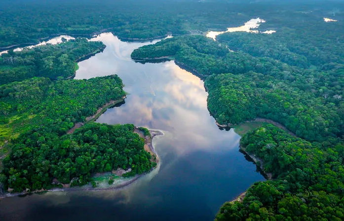

Amazônia

A Amazônia compreende um conjunto de ecossistemas que envolve a bacia hidrográfica do Rio Amazonas,
bem como
a
Floresta Amazônica; é considerada a região de maior biodiversidade do planeta e o maior bioma
do Brasil. Não
é
exclusivamente brasileira, sendo, portanto, encontrada em outros países.
Localização:
Brasil, Bolívia, Colômbia, Equador, Guiana, Guiana Francesa, Peru, Suriname e Venezuela.
Ocupa, aproximadamente, 49,29% do território brasileiro, nos estados
do Acre, Amapá, Amazonas, Pará, Roraima,
Rondônia,Mato Grosso, Maranhão e Tocantins.
Área:
Considerando a abrangência em outros países, o bioma apresenta cerca de 6,9 milhões de km2.
No Brasil: 4.196.943 milhões de km2, segundo o IBGE.
Habitantes:
Aproximadamente, 33 milhões de habitantes, incluindo cerca 1,6 milhão de indígenas
Vegetação e flora da Amazônia: A Amazônia abriga a Floresta Amazônica, considerada a maior floresta tropical
do mundo,
abrangendo uma área de mais de 5 milhões de km2. A floresta conta com um elevado número de espécies
(animais e vegetais),
é, então,
rica em biodiversidade. A vegetação, de maneira geral, é caracterizadapor uma floresta densa e pela presença
de árvores de grande porte. O bioma possui cerca de 3.650.000 km² de florestas contínuas. De maneira específica,
a vegetação é
classificada em três categorias:
• Mata de terra firme: vegetação localizada
em regiões de altitudes mais elevadas, essas são, portanto, caracterizadas por não haver
inundações e
sua
vegetação ser sempre seca. Há presença de árvores de grande porte, como castanheira, palmeira e mogno.
• Mata de igapó: vegetação localizada em terrenos de menores altitudes, estando esses inundadospraticamente
por todo o tempo.
Há presença de vegetação baixa, como musgos e arbustos. Nessas matas, é possível
encontrar a vitória-régia, planta aquática, símbolo do bioma Amazônia.
• Matas de várzea: vegetação localizada em regiões de altitudes intermediárias e que são inundadas em uma
determinada época do ano.
As áreas mais altas permanecem inundadas por menos tempo. Já as áreas menos
elevadas permanecem inundadas por um tempo maior.
As espécies encontradas nessas áreas são semelhantes
às
encontradas nas matas de igapó, apresentando, também, árvores de até 40 metros de altura.
Uma pesquisa feita na Amazônia revelou que o bioma conta com cerca de 14.003 espécies de plantas que se
dividem em árvores, ervas,
arbustos, lianas e trepadeiras. Desse total, cerca de 76% encontra-se no
Brasil. A flora apresenta elevado potencial medicinal e econômico.
É possível encontrar espécies de
bromélias e orquídeas, bem como seringueiras e buritis, entre outras plantas e árvores.

Fauna da Amazônia
A fauna da Amazônia é extremamente rica. Estudos indicam que é possível encontrar na região cerca de 30 milhões
de espécies animais, e,
apesar disso, a fauna desse bioma não é totalmente conhecida. É composta,
especialmente,
por aves, roedores, répteis, insetos e anfíbios.
Tucanos, araras, papagaios, macacos, onças, jacarés e
peixes-boi são símbolos desse bioma.
Clima da Amazônia
O clima predominante na Amazônia é o equatorial úmido. Trata-se de uma região caracterizada por longos períodos
de chuvas, com índices pluviométricos que variam entre 1.500 mm e 3.600 mm por ano. A umidade do ar é elevada,
chegando a 80%, e as temperaturas variam entre 22ºC e 28ºC.
Hidrografia da Amazônia
A Amazônia abrange a região da Bacia Amazônica, considerada a maior bacia hidrográfica do
planeta, ocupa
mais de
7 milhões de km2. O principal rio é o Rio Amazonas,
o qual possui mais de 1.100 afluentes que
nele
deságuam.
Os rios são, muitas vezes, caracterizados pela cor de suas águas. Há os rios barrentos, devido à
concentração
de
nutrientes e sedimentos, como o Rio Amazonas; há os rios de águas pretas, caracterizados pela presença de
areia
e húmus, como o Rio Negro; e há os rios de águas
claras, que não apresentam tanta concentração de
nutrientes e
possuem corredeiras em seus trechos, como o Rio Xingu. Os principais rios
são:
• Rio Amazonas: nasce na Cordilheira dos Andes, no Peru. Entra no Brasil conhecido como Solimões. Em alguns
trechos, sua largura pode atingir 100 metros. É um rio bastante navegável.
• Negro: é considerado o maior afluente à margem esquerda do Rio Amazonas.
• Tapajós: nasce na divisa entre os estados do Mato Grosso, Pará e Amazonas, desaguando na margem direita do
Rio Amazonas.
• Madeira: nasce na Cordilheira dos Andes, na Bolívia.
Relevo da Amazônia
Na Amazônia são encontradas três principais formas de relevo: planícies, representadas pelas áreas inundadas
pelos rios; planaltos, representados pelas regiões de serras;
e depressões, como a região das depressões
norte e sul amazônicas. A estrutura geológica da região compreendida pelo bioma é formada pelo Escudo das
Guianas.
Há presença de bacias sedimentares ao longo da região do Rio Amazonas. Escudos cristalinos são
encontrados ao norte e ao sul dessa
bacias sedimentares.
Devastação da Amazônia
Nas últimas décadas, a Amazônia tem sofrido um aumento no desmatamento de suas áreas. De acordo com uma
pesquisa
realizada pelo norte-americano Thomas Lovejoy (professor da George Mason University) e pelo
brasileiro Carlos Nobre (coordenador do Instituto Nacional de Ciência e Tecnologia para Mudanças
Climáticas), o bioma amazônia pode sofrer
perdas irreversíveis devido ao desmatamento. O qual, segundo os
pesquisadores, já chegou a 17% nos últimos 50 anos,
sendo que o limite seria 20%, para que não houvesse
consequências irreversíveis para o clima e o ciclo hidrológico.
Segundo o Instituto do Homem e Meio Ambiente
da Amazônia (Imazon), o desmatamento no bioma aumentou cerca de
40%
entre os anos de 2017 e 2018, perdendo-se quase 4.000 km2 de mata nativa. A ocorrência do desmatamento
deu-se,
principalmente, em áreas privadas, assentamentos e unidades de conservação.